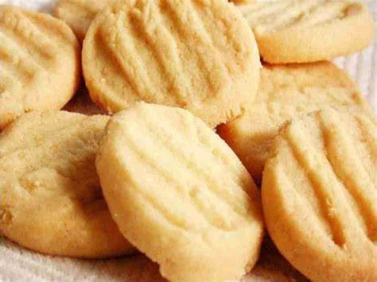
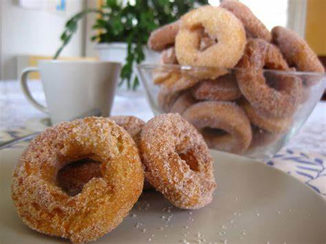
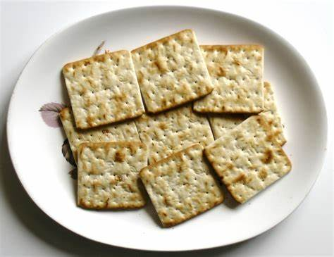
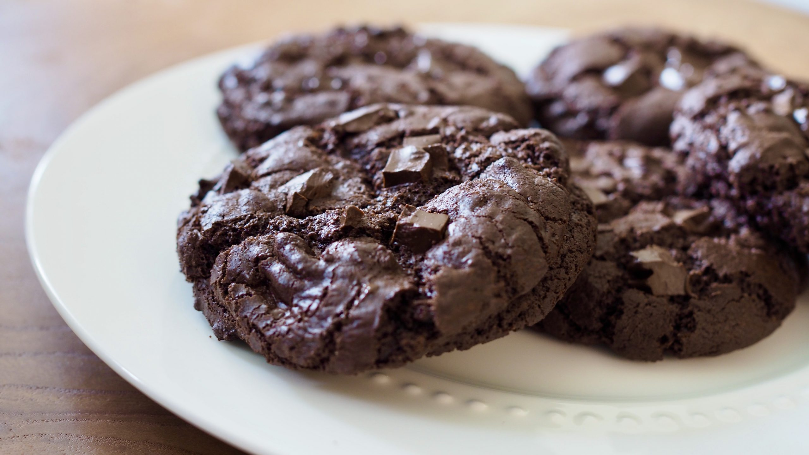
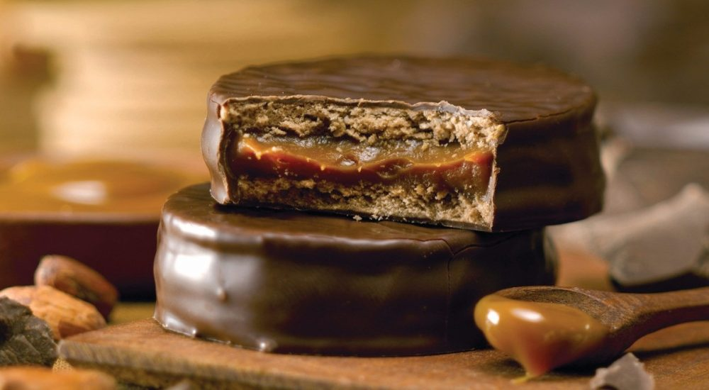
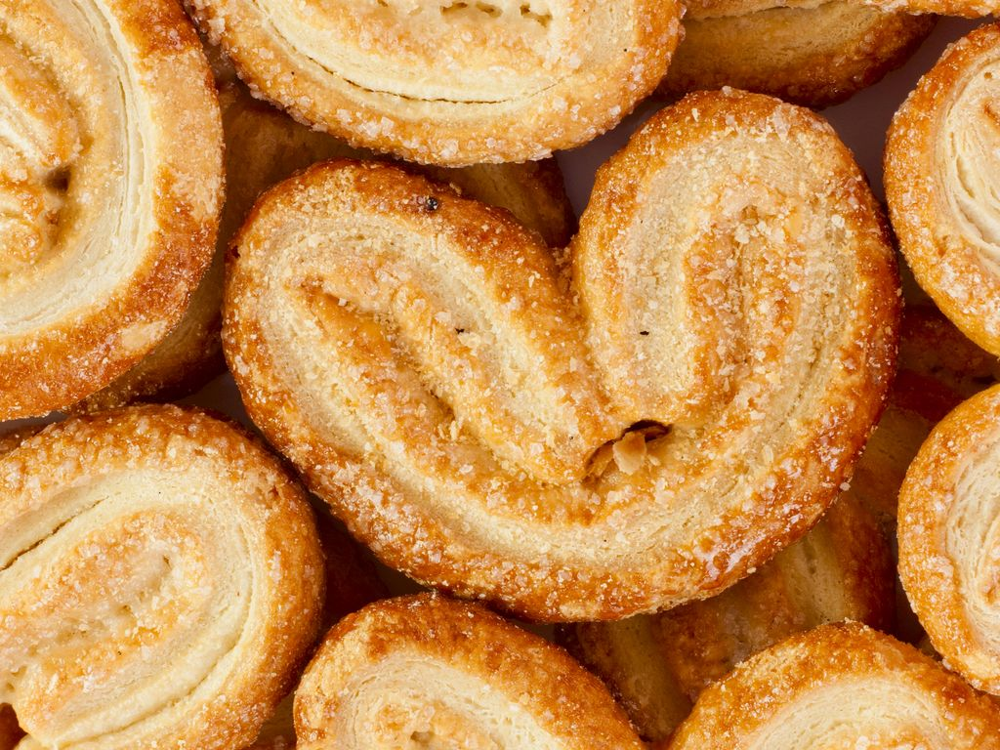

Biscoito de Maizena
Um clássico biscoito de maizena, crocante por fora e macio por dentro. Perfeito para um lanche leve a qualquer hora do dia.

Receita:
- Ingredientes:
- 2 xícaras de maizena
- 1 xícara de açúcar
- 1 xícara de margarina
- 1 ovo
- 1 colher de chá de fermento em pó
- Modo de Preparo:
Misture todos os ingredientes até obter uma massa homogênea. Faça pequenas bolinhas e asse em forno preaquecido a 180°C por 15-20 minutos.
Seu delicioso Biscoito de Maizena está pronto para ser apreciado! Aproveite cada mordida e compartilhe esse momento de sabor com quem você ama.
Rosquinhas
Deliciosas rosquinhas, feitas com ingredientes frescos e uma pitada de carinho. Ideais para acompanhar um café ou chá relaxante.

Receita:
- Ingredientes:
- 2 xícaras de farinha de trigo
- 1 xícara de açúcar
- 1/2 xícara de leite
- 1/2 xícara de manteiga derretida
- 2 ovos
- 1 colher de chá de fermento em pó
- Modo de Preparo:
Misture todos os ingredientes até formar uma massa homogênea. Modele as rosquinhas e leve para assar em forno preaquecido a 180°C por 15-20 minutos.
Suas deliciosas Rosquinhas estão prontas para serem apreciadas! Aproveite cada mordida e compartilhe esse momento de sabor com quem você ama.
Cream Cracker
Biscoito cream cracker, uma opção leve e versátil. Perfeito para servir com patês, queijos ou simplesmente saborear como um lanche saudável.

Receita:
- Ingredientes:
- 2 xícaras de farinha de trigo
- 1/2 xícara de água
- 1/2 xícara de margarina
- 1 colher de chá de sal
- Modo de Preparo:
Misture todos os ingredientes até formar uma massa. Abra a massa com um rolo e corte em quadrados. Asse em forno preaquecido a 180°C por 10-15 minutos.
Seu saboroso Cream Cracker está pronto para ser apreciado! Aproveite cada mordida e compartilhe esse momento de sabor com quem você ama.
Cookie de Chocolate
Um irresistível cookie de chocolate, repleto de pedaços suculentos de chocolate. Perfeito para os amantes de chocolate!

Receita:
- Ingredientes:
- 1 xícara de manteiga
- 1 xícara de açúcar mascavo
- 1 ovo
- 2 xícaras de farinha de trigo
- 1 colher de chá de fermento em pó
- 1/2 colher de chá de sal
- 1 1/2 xícara de gotas de chocolate
- Modo de Preparo:
Misture a manteiga, açúcar mascavo e ovo até obter uma mistura cremosa. Adicione a farinha, fermento em pó e sal. Por fim, adicione as gotas de chocolate. Asse em forno preaquecido a 180°C por 10-12 minutos.
Seu irresistível Cookie de Chocolate está pronto para ser apreciado! Aproveite cada mordida e compartilhe esse momento de sabor com quem você ama.
Alfajor
Um doce tradicional da Argentina, composto por camadas de biscoito e recheio de doce de leite, coberto com chocolate.

Receita:
- Ingredientes:
- 1 xícara de amido de milho
- 1 xícara de farinha de trigo
- 1 colher de chá de fermento em pó
- 1/2 xícara de manteiga
- 1/2 xícara de açúcar
- Doce de leite e chocolate para recheio e cobertura
- Modo de Preparo:
Misture o amido de milho, farinha de trigo e fermento. Em outra tigela, bata a manteiga e o açúcar até obter um creme. Junte as duas misturas e forme a massa. Corte em discos, asse em forno preaquecido a 180°C por 10-12 minutos. Recheie com doce de leite e cubra com chocolate derretido.
Seu delicioso Alfajor está pronto para ser apreciado! Aproveite cada mordida e compartilhe esse momento de sabor com quem você ama.
Palmier
Um biscoito em forma de coração, feito com massa folhada e açúcar, conhecido por seu sabor crocante e levemente caramelizado.

Receita:
- Ingredientes:
- 1 pacote de massa folhada
- 1 xícara de açúcar
- Modo de Preparo:
Abra a massa folhada, polvilhe com açúcar e dobre as extremidades até o meio. Corte em fatias e asse em forno preaquecido a 200°C por 10-15 minutos ou até dourar.
Seu crocante Palmier está pronto para ser apreciado! Aproveite cada mordida e compartilhe esse momento de sabor com quem você ama.